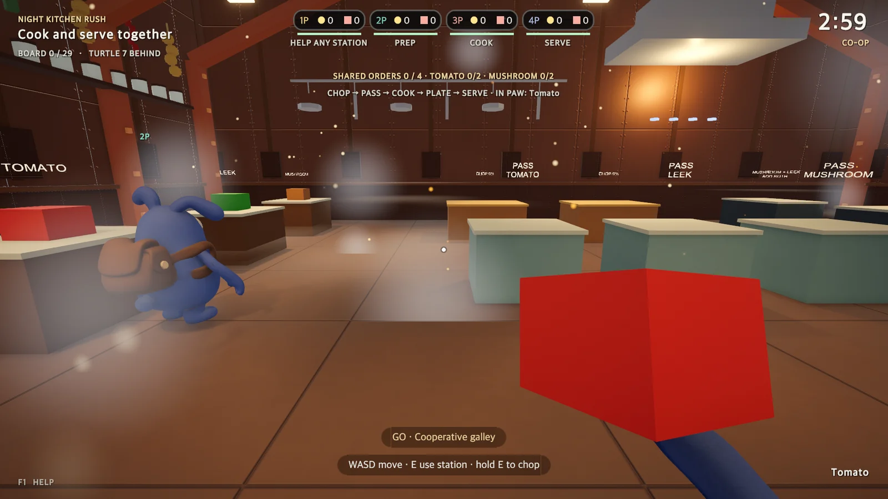
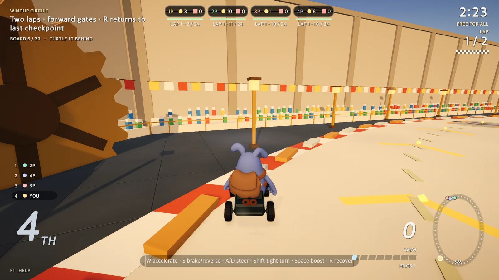
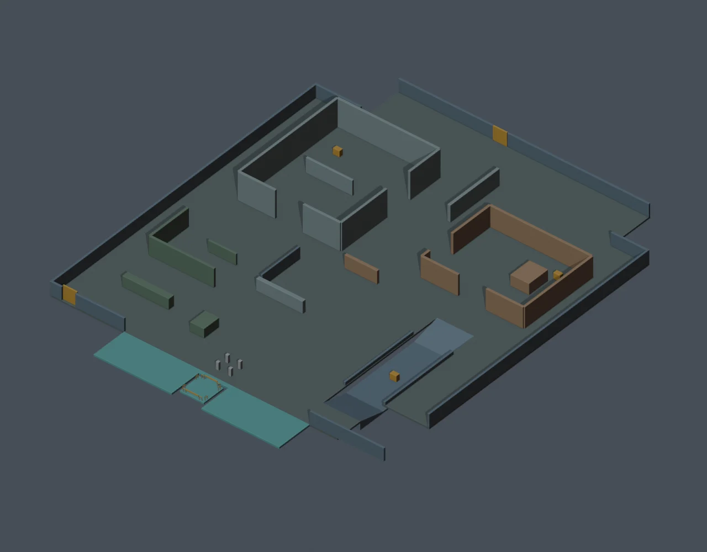

개발 중 · 1명 + 봇 3명
Cube Escape
협동 요리의 공동 주문·재료 전달·조리·서빙과 봇 분담을 시험했습니다. 최종 방·소품·네 캐릭터 모델/모션은 제작 중입니다.
데모 9개
01사격·엄폐·재장전·봇 생존 정산 확인02검 강화하기
개인전 · 강화 수치·검 가치 순위
데바데 추격장 (Dead by Daylight)
1 대 3 · 역할 무작위
피크 점프맵 (PEAK)
개인전 · 점프·등반 완주
8번 출구
2 대 2 · 별도 복도 8단계 탈출
최근 검토 화면

Unity Play · 2026-11-25협동 요리 실제 플레이공동 주문·봇 분담·조리/서빙 확인 · 임시 작업대/음식 도형, 기존 가방 모델·최종 모션 교체 전
Unity Play · 2026-11-25카트 실제 주행경로를 막던 반복 상자 제거·발판 하강·주행/봇 정산 확인 · 기존 모델, 최종 탑승/경사 트랙 미완
Blender 블록아웃 · 2026-11-25데바데 추격장 공간72×88m 공간 후보 · 새 규칙은 기존 공간에서 확인 · 이 공간은 게임 미적용캐릭터 v130 · 어깨 연결안의 UV 조건 검토
연결안 제외 · 모델 변경 전
검토 2026-11-24 13:09 KST · 유지 이미지 v84
현재 검토 자료 →기존 방·오브젝트 제작 자료
기획·시안 자료이며 현재 데모 구현 범위와 다릅니다.